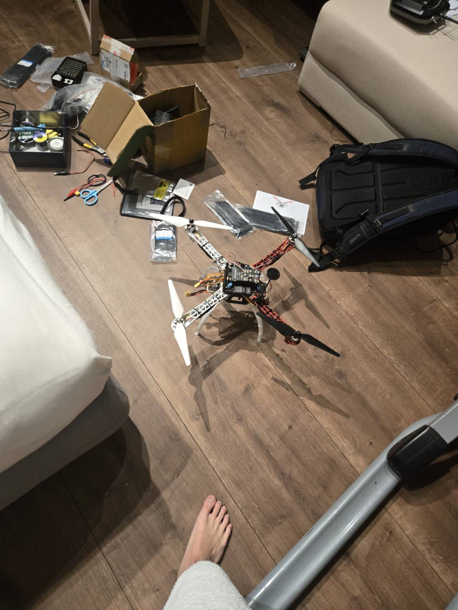
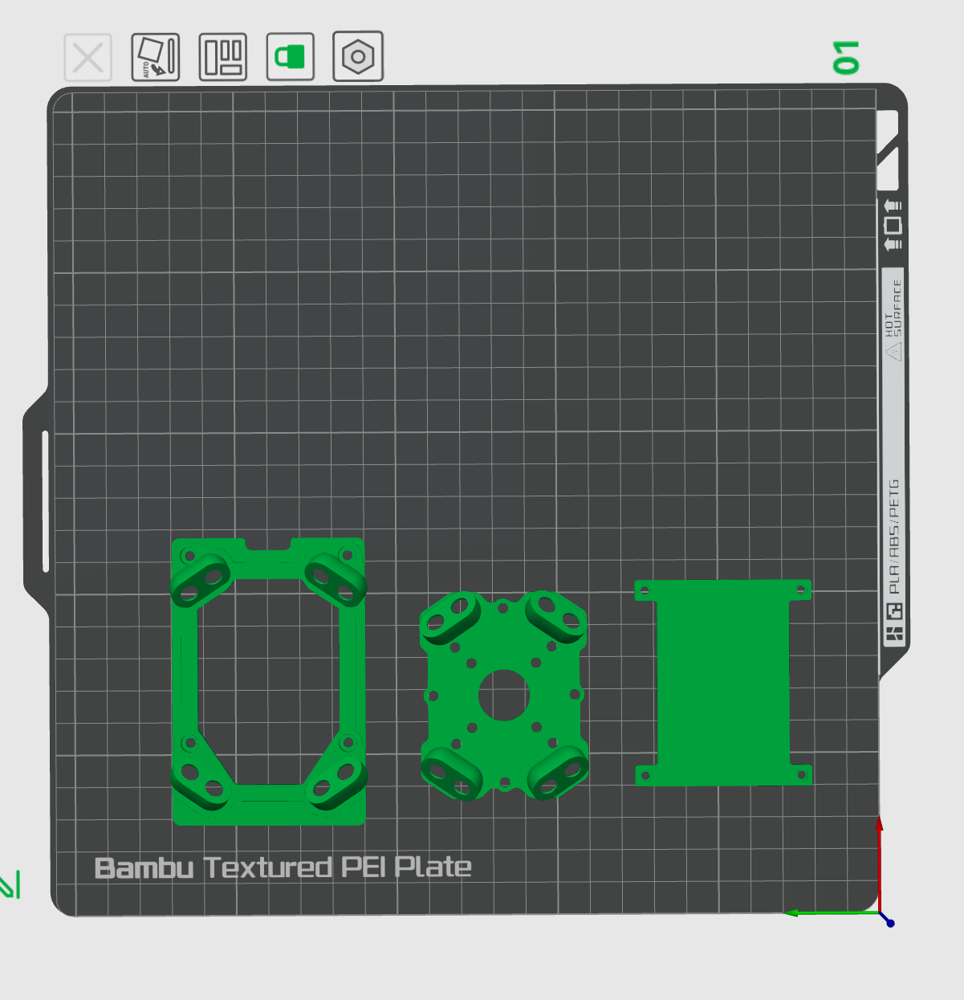
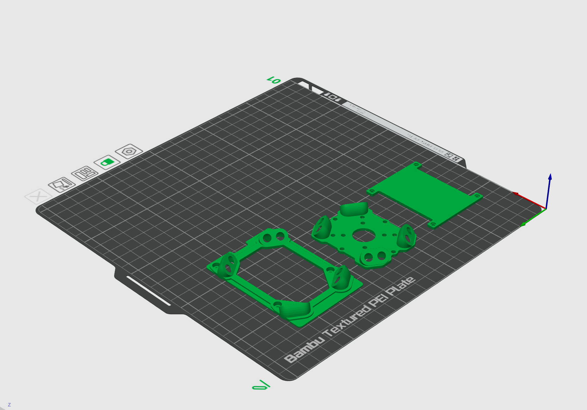
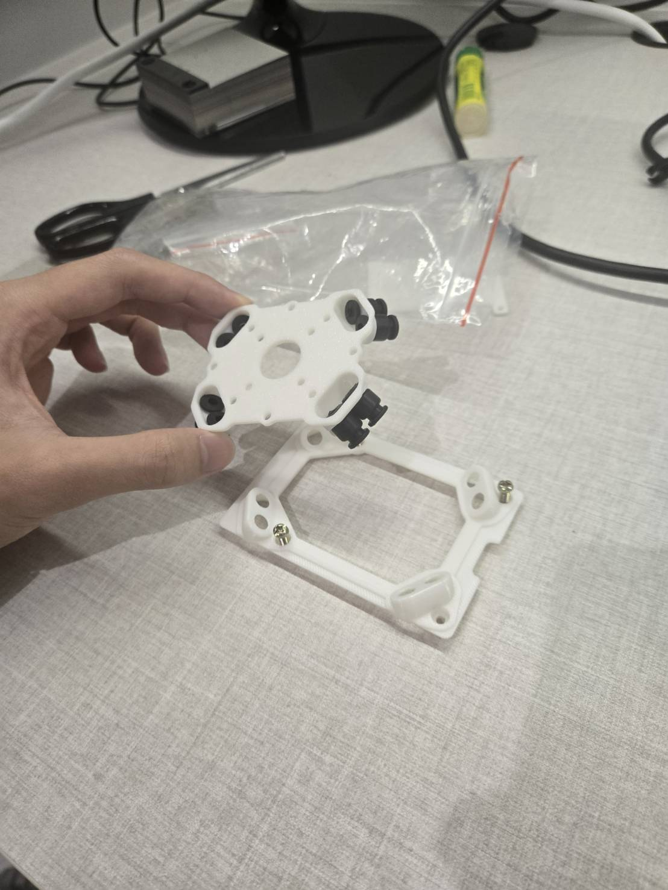
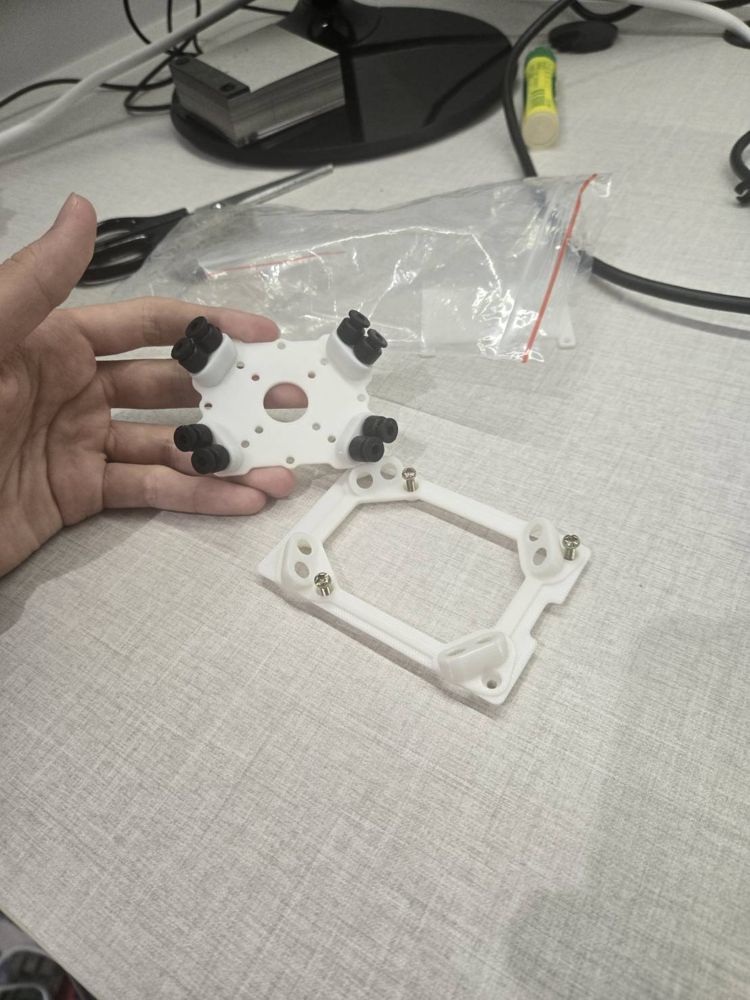
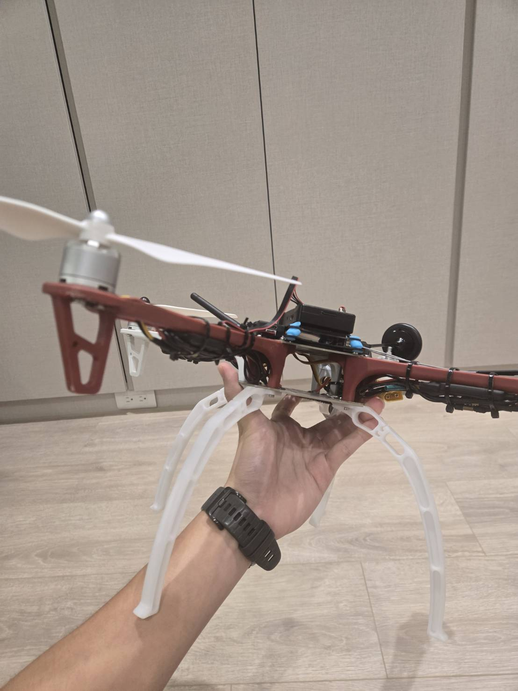
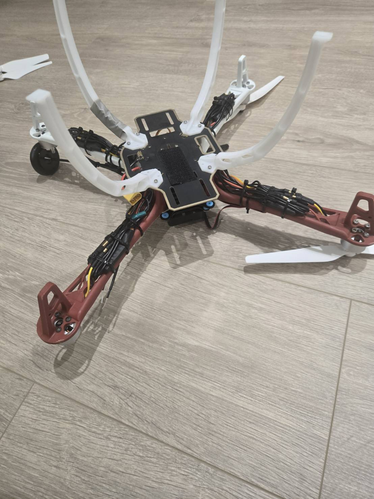
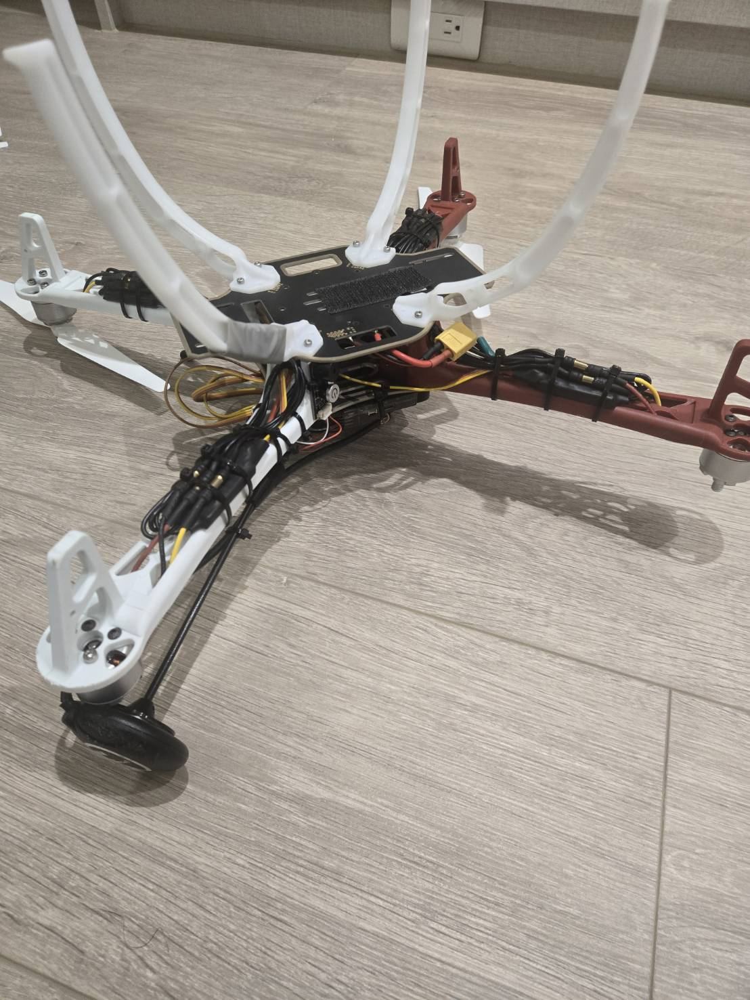

Mechanical and electrical integration
I selected the hardware, assembled the airframe, soldered and routed the electronics, and designed custom parts to integrate the flight controller and companion computer.
Hardware assembly
I researched and selected the frame, motors, ESCs, Pixhawk flight controller, GPS, telemetry module, radio receiver, battery hardware, Raspberry Pi, and cameras. I assembled the drone and completed the wiring and soldering required for flight testing.

Raspberry Pi / Pixhawk mounting system
I completed 20–30+ hours of CAD training and designed a compact mounting system for the onboard computer and flight controller. The design uses rubber elements for vibration isolation and keeps wiring accessible.
Fit both computing systems within the available center-frame space.
Reduce direct structural vibration reaching sensitive electronics.
Use only the structure required for mounting and support.
Keep connectors and wiring accessible during testing.


Printed and installed hardware
The CAD design was printed, assembled with vibration-damping elements, and installed on the airframe.



Electrical routing and interference
During testing, motor operation affected camera/data transmission. I investigated the problem as an electrical-integration issue and changed the physical wire routing around high-current motor and ESC wiring. I later added flight-log analysis for current-related magnetometer changes.

